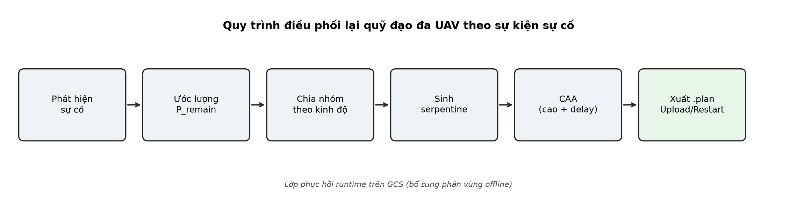
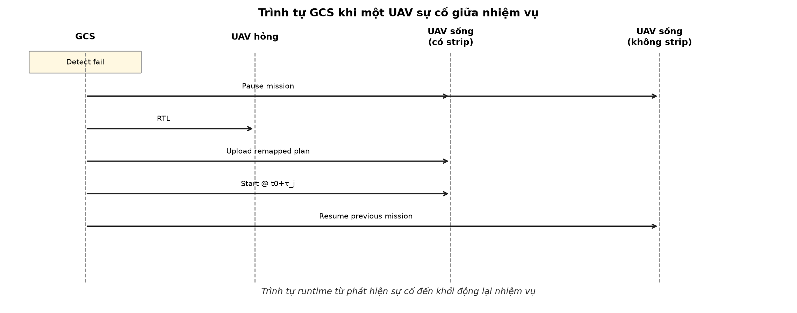

1Khoa Cơ học kỹ thuật và Tự động hóa, Trường Đại học Công nghệ – Đại học Quốc gia Hà Nội
144 Xuân Thủy, Cầu Giấy, Hà Nội, Việt Nam
Tóm tắt: Nhiệm vụ bao phủ đa UAV trên GCS thực tế thường tách lập kế hoạch tĩnh trước khi bay với failsafe từng phương tiện; khi một UAV sự cố giữa nhiệm vụ, phần residual thường bị bỏ sót hoặc được phân công lại thủ công và dễ xung đột. Khác với phân vùng serpentine offline trước chuyến bay, bài báo đề xuất lớp phục hồi mid-mission tập trung: phát hiện sự cố, gộp residual toàn đội, remap bằng chia nhóm kinh độ và đường lawnmower/serpentine mới, rồi tách độ cao/thời gian khởi động (CAA) trước khi xuất .plan mid-air chuẩn QGroundControl/PX4. Kiểm chứng động học điểm trên mission thực tế cho thấy, so với không replan, remap tăng η (93,9% → 97,5%) và giảm mạnh Tfin/Lmax; so với remap không CAA, lớp đề xuất loại Nc dự báo (1 → 0) với chi phí thời gian chỉ khoảng vài giây. Kết quả mang tính logic/động học điểm, chưa thay thế đánh giá PX4 SITL hay bay thực địa.
Từ khóa: hệ thống đa UAV; điều phối chịu lỗi; lập kế hoạch trực tuyến; bao phủ khu vực; serpentine; tránh va chạm; MAVLink; tìm kiếm cứu nạn.
Đội hình nhiều UAV ngày càng được sử dụng cho nhiệm vụ bao phủ trong tìm kiếm cứu nạn, đánh giá thiên tai và giám sát môi trường. Vận hành song song giúp rút ngắn thời gian hoàn thành và tăng khả năng chịu lỗi ở mức hệ thống. Tuy nhiên, một hoặc nhiều UAV có thể rời đội hình trước khi kết thúc nhiệm vụ do mất liên lạc, kích hoạt chế độ an toàn của bộ điều khiển bay, hoặc năng lượng còn lại không đủ để tiếp tục bao phủ.
Hầu hết quy trình GCS hiện nay vẫn dựa trên phân công tĩnh trước khi bay: mỗi UAV nhận một vùng và một chuỗi waypoint cố định. Khi một phương tiện sự cố, hai hệ quả không mong muốn thường xuất hiện. Thứ nhất, phần việc còn lại của UAV hỏng bị bỏ trống nếu không có can thiệp. Thứ hai, việc phân công lại khẩn cấp dễ tạo quỹ đạo giao cắt hoặc thời điểm đến gần nhau, làm tăng rủi ro va chạm.
Bài báo tập trung vào phục hồi trực tuyến sau sự cố, không nhằm thay thế thuật toán phân vùng offline trước khi cất cánh (ví dụ [8]). Các đóng góp chính gồm:
(1) Mô hình sự cố và logic phát hiện cho nhiệm vụ bao phủ đa UAV, phân biệt sự cố giữa nhiệm vụ với RTL bình thường sau khi hoàn thành nhiệm vụ.
(2) Chiến lược remap residual runtime: gộp residual của UAV hỏng và các UAV sống, chia theo kinh độ, sinh lawnmower/serpentine mới (lọc centroid chỉ khi |P| < |Ua|).
(3) Lớp CAA nhẹ theo pin (tách độ cao + lệch τ), không dịch ngang hình học bao phủ sau remap.
(4) Triển khai đầu cuối trên GCS MAVLink/PX4: xuất .plan mid-air, pause/RTL, nạp và khởi động lại có lịch τ.
Đóng góp không nằm ở việc cải tiến phân vùng offline kiểu [8], mà ở vòng phục hồi khi lực lượng đội bay giảm giữa nhiệm vụ.
Phần này sắp xếp tài liệu theo sáu nhóm nội dung gắn trực tiếp với bài toán phục hồi quỹ đạo đa UAV khi sự cố.
Nhóm A – Lập đường bay bao phủ (CPP) và bao phủ đa UAV. Bài toán CPP đã được khảo sát rộng cho robot nói chung [1] và cho UAV nói riêng [2], [3]. Các hướng cổ điển dùng phân tách tế bào và quỹ đạo lawnmower/boustrophedon [4]. Với đa UAV, các công trình tiêu biểu phân tách đa giác rồi gán mỗi phần cho một phương tiện [5], [6], hoặc tối ưu tuyến bao phủ có nhận thức năng lượng [7]. Công trình [8] đề xuất phân vùng theo cạnh dài và định tuyến serpentine ở giai đoạn offline trước khi bay. Bài này cùng miền bao phủ đa UAV nhưng giải bài toán khác: khi |U| giảm giữa nhiệm vụ, residual được remap bằng mapper serpentine đơn giản trên GCS; bài báo không tái hiện hay “cải tiến” thuật toán cạnh dài của [8].
Nhóm B – Phân bổ nhiệm vụ đa robot/đa UAV. Phân loại bài toán phân bổ nhiệm vụ đa robot (MRTA) được hệ thống hóa trong [9]. Các cơ chế theo thị trường (auction/market-based) là hướng phổ biến để phân công động [10]. Thuật toán CBBA và các biến thể đồng thuận–đấu giá cho phép phân bổ phi tập trung, bền vững với bất đồng nhận thức tình huống [11], [12]. Các lược đồ phân bổ phân tán trong ngữ cảnh đa UAV cũng đã được khảo sát sớm [13].
Nhóm C – Chịu lỗi và tái phân công khi mất phương tiện. Kiến trúc chịu lỗi cổ điển như ALLIANCE minh họa khả năng robot còn lại tiếp nhận nhiệm vụ khi thành viên khác suy giảm [14]. Gần đây, các khung market-based / consensus được mở rộng cho tái lập kế hoạch khi UAV hỏng trong tìm kiếm cứu nạn hoặc đội hình suy giảm [15]–[17]. Điểm chung là phát hiện mất tác nhân rồi giải phóng/phân bổ lại phần việc còn lại; khác biệt của bài này nằm ở remap serpentine tập trung trên GCS kèm lớp CAA độ cao/thời gian cho mission mid-air chuẩn QGC/PX4.
Nhóm D – Tránh va chạm đa phương tiện. Velocity Obstacles [18] và Reciprocal/Optimal Reciprocal Collision Avoidance [19], [20] là nền tảng hình học cho tránh va chạm cục bộ. Với UAV, nhiều công trình kết hợp tách mặt phẳng ngang với kiểm soát/tách độ cao [21], [22]. Bài báo kế thừa tư duy tách không–thời gian nhưng áp dụng ở lớp khởi động lại nhiệm vụ (phân tầng độ cao + lệch delay), thay vì điều khiển vận tốc thời gian thực trên từng UAV.
Nhóm E – Mạng UAV, ứng dụng dân sự và cứu nạn. Khảo sát mạng UAV dân sự nhấn mạnh mất liên lạc và ràng buộc năng lượng [23]. Các tổng quan ứng dụng dân sự và thách thức then chốt (pin, va chạm, swarming) được trình bày trong [24]. Vai trò UAV trong quản lý thiên tai và SAR được phân tích trong [25], [26]. Các bài toán lập đường bay đa vùng ưu tiên cứu hộ cũng ngày càng được quan tâm [27].
Nhóm F – Nền tảng hệ thống bay và GCS. Hệ sinh thái PX4/MAVLink và API điều nhiệm vụ/telemetry là hạ tầng thực thi phổ biến cho GCS thực nghiệm [28], [29]. Tài liệu failsafe/return mode của PX4 [30] cho thấy failsafe bảo vệ từng phương tiện đơn lẻ, nhưng không tự sửa tính liên tục bao phủ ở cấp đội bay—khoảng trống mà vòng điều phối lại đề xuất hướng tới lấp đầy.
Tóm lại, GCS thực tế thường tách lập kế hoạch offline với xử lý failsafe runtime. Bài báo nối phát hiện sự cố, remap residual bằng serpentine và khởi động lại nhiệm vụ đã giải xung đột trong cùng một vòng trực tuyến tập trung.
Xét đội bay U = {u1, …, uN} thực hiện nhiệm vụ bao phủ dưới trạm điều khiển tập trung. Mỗi UAV ui tại thời điểm t có vị trí pi(t) = (φi, λi), độ cao tương đối hi(t), phần trăm pin còn lại bi(t) ∈ [0, 100], trạng thái liên lạc ℓi(t) ∈ {0, 1}, và danh sách waypoint có thứ tự πi = (wi,1, …, wi,ni).
Gọi ki(t) là chỉ số waypoint chưa hoàn thành gần nhất ước lượng từ pi(t). Tập waypoint còn lại của UAV i là:
Ri(t) = {wi,ki(t), …, wi,ni}.
Khi sự cố xảy ra, tập residual toàn cục được định nghĩa:
Premain(tf) = Rf(tf) ∪ (∪uj ∈ Ua Rj(tf)).
UAV uf được tuyên bố sự cố tại tf nếu thỏa một trong các điều kiện sau trong lúc vẫn đang mang nhiệm vụ bao phủ chưa xong:
1) Mất liên lạc / mất điều khiển (proxy): không nhận telemetry hợp lệ quá Tlost, trong khi UAV đang in-mission hoặc đang bay (hi > 1 m);
2) Sự cố năng lượng: bf(tf) ≤ bmin;
3) Chế độ failsafe: mode thuộc {RTL, LAND, FAILSAFE, RETURN} khi nhiệm vụ còn dở.
RTL bình thường sau khi hoàn thành nhiệm vụ được loại trừ nhờ yêu cầu cờ in-mission còn hiệu lực đối với sự cố pin và mode. Mỗi UAV chỉ bị latch sự cố một lần để tránh kích hoạt lặp.
Đặt Ua = U \ {uf} là tập UAV còn hoạt động (có GPS hợp lệ). GCS cần tính các kế hoạch mới {π′j} bao phủ Premain và thỏa ràng buộc an toàn. Hàm mục tiêu đa tiêu chí dùng để đánh giá (không phải bộ tối ưu online):
J = ω1 Tfin + ω2 Lmax + ω3 Crisk,
trong đó Tfin là thời gian hoàn thành dự kiến sau remap,
Lmax = maxuj ∈ Ua Length(π′j)
phản ánh mất cân bằng tải, và Crisk là số xung đột cặp đôi dự báo theo tốc độ danh định. Ràng buộc an toàn yêu cầu:
‖p̂i(t) − p̂j(t)‖ ≥ dsafe, ∀ i ≠ j, ∀ t ∈ [tf, Tfin],
có thể tăng cường bằng tách độ cao |hi − hj| ≥ Δhclear với Δhclear = Δh − 1 (mặc định 4 m khi Δh = 5 m).

Hình 1. Quy trình điều phối lại quỹ đạo đa UAV theo sự kiện sự cố (serpentine remap)
Quy trình đề xuất gồm năm giai đoạn thực thi tại GCS.
Mỗi kênh telemetry cập nhật vector trạng thái sống si = (pi, hi, bi, modei, tlasti, inMissioni). Việc phát hiện chạy định kỳ với chu kỳ Δt ≈ 1 s.
Waypoint còn lại của mỗi UAV được lấy từ tệp .plan đang dùng và vị trí GNSS hiện tại (chỉ số waypoint gần nhất). Cách này giảm phụ thuộc vào một luồng mission-progress đơn lẻ. Tập Premain được tạo bằng cách gộp residual của UAV sự cố và mọi UAV còn sống, rồi khử trùng gần theo cửa sổ cục bộ: mỗi điểm mới chỉ được giữ nếu cách mọi điểm trong 12 điểm vừa thêm hơn 1 m (tránh O(K2) trên residual dày).
Đây là khác biệt chính so với chỉ “chia lại danh sách waypoint cũ”. Quy trình remap gồm:
1) Ước lượng khoảng cách làn δ từ median khoảng cách lân cận của Premain (kẹp trong [5, 40] m), rồi tăng δ nếu dự báo số waypoint vượt ngân sách nạp mission (khoảng 250 điểm/UAV);
2) Đặt M′ = min(|Ua|, |Premain|). Nếu |Ua| > |Premain| thì chỉ giữ M′ UAV gần centroid(Premain) nhất (tránh dải rỗng); ngược lại dùng toàn bộ Ua có GPS hợp lệ;
3) Sắp xếp Premain theo kinh độ và cắt thành M′ nhóm cân bằng về số điểm;
4) Với mỗi nhóm, lập bounding box, đệm pad = max(0,5; 0,1·δ) mét, rồi sinh đường lawnmower/serpentine với bước δ; điểm bắt đầu ưu tiên gần pj(tf);
5) Gán dải theo thứ tự tây → đông cho các UAV đã chọn, sắp theo kinh độ hiện tại.
π′j = Serpentine(Pad(BBox(Gj)), δ, pj(tf)).
Sau khi sinh serpentine, các quỹ đạo có thể chồng lấn không–thời gian, đặc biệt trên đoạn chuyển tiếp. Lớp giải xung đột ưu tiên:
1) Phân tầng độ cao: h′j = h0j + rank(j)·Δh. Xếp hạng theo pin giảm dần: pin cao hơn → rank nhỏ hơn → băng thấp hơn và τ nhỏ hơn (ưu tiên hoàn thành sớm trong mô hình dự báo). Độ cao nền h0j lấy từ alt_rel hiện tại nếu ≥ 5 m, ngược lại dùng 10 m;
2) Lệch thời gian khởi động: τj = rank(j)·τ0; nếu vẫn còn xung đột dự báo thì tăng thêm τj += 1 + rank(j), lặp tối đa 4 vòng.
Vị trí dự báo p̂j(t) nội suy theo polyline với tốc độ danh định v ≈ 2 m/s. Một xung đột được đếm khi hai UAV có |h′i − h′j| < (Δh − 1) và đi vào quả cầu bán kính dsafe trong cùng mẫu thời gian (Δtsample = 1 s). Với Δh = 5 m, ngưỡng bỏ qua kiểm tra ngang là 4 m—đủ để các băng độ cao danh định không bị đếm xung đột. Hình học serpentine đã sinh không bị dịch ngang thêm ở bước này.
Các quỹ đạo đã giải xung đột được xuất ra tệp plan chuẩn QGroundControl (replan_points{i}.plan) và ghi đè points{i}.plan sau khi sao lưu bản gốc lần đầu vào mission/backup_before_replan/. Với khởi động lại khi đang bay, mọi mục dẫn đường dùng lệnh waypoint (MAV_CMD 16), không dùng takeoff (22), rồi kết thúc bằng RTL (20).
Trình tự runtime trên GCS: tạm dừng mọi UAV helper còn liên lạc → RTL UAV sự cố nếu còn link → nạp/khởi động các UAV nhận dải mới theo lịch tuyệt đối tstartj = t0 + τj → các UAV không nhận dải mới (nếu có, ví dụ khi |P| < |Ua|) được resume mission cũ, không gán strip mới.

Hình 2. Trình tự runtime từ phát hiện sự cố đến khởi động lại nhiệm vụ
Gọi M là số UAV còn sống được gán dải, K = |Premain|, T số mẫu thời gian dự báo xung đột, và L số waypoint serpentine trung bình mỗi dải. Quét sự cố O(N)/chu kỳ. Ước lượng spacing O(K2) trên mẫu giới hạn. Chia theo kinh độ O(K log K). Sinh serpentine O(M·L). Kiểm tra xung đột cặp đôi O(M2 T). Với đội bay nhỏ (N ≤ 6) và vài trăm waypoint, vòng phục hồi phù hợp vận hành tương tác trên GCS.
Bảng 1. Tham số runtime mặc định (khớp ReplanConfig trong mã nguồn)
| Tham số | Ký hiệu | Mặc định | Vai trò |
|---|---|---|---|
| Ngưỡng mất liên lạc | Tlost | 3 s | Proxy mất điều khiển/liên lạc |
| Ngưỡng pin | bmin | 25% | Kích hoạt sự cố năng lượng |
| Khoảng cách an toàn ngang | dsafe | 15 m | Ngưỡng xung đột dự báo |
| Bước tách độ cao | Δh | 5 m | Băng độ cao theo rank pin |
| Ngưỡng bỏ qua xung đột đứng | Δh − 1 | 4 m | Cặp UAV đủ tách đứng không đếm Nc |
| Bước lệch thời gian | τ0 | 2 s | τj = rank·τ0 |
| Số vòng tăng delay CAA | — | 4 | Mỗi vòng: τj += 1+rank |
| Tốc độ danh định dự báo | v | 2 m/s | Nội suy vị trí cho CountConflicts |
| Khoảng làn serpentine | δ | tự ước lượng | Bước lưới lawnmower (kẹp 5–40 m) |
| Ngân sách WP/UAV | — | ~250 | Tăng δ nếu vượt ngưỡng |
| Chu kỳ giám sát | Δt | 1 s | Vòng detect_failures |
| Tập giám sát | — | UAV 1–5 | monitor_indices |
| Cooldown tái điều phối | — | 15 s | Tránh kích hoạt dồn dập |
| Auto-replan mặc định | — | OFF | Bật bằng nút UI / Force Replan |
Phương pháp được hiện thực thành module replan_coordinator tích hợp trong GCS đa UAV (Python/PyQt5, MAVSDK/qasync, QGroundControl .plan). Tập giám sát mặc định là UAV 1–5; Auto-replan mặc định tắt và có thể bật từ UI (Auto-Replan / Force Replan / Sim Fail UAV1). Harness offline simulate_replan_experiments.py chạy so sánh B0/B1/Proposed và xuất CSV chỉ số Bảng 3. Các kiểm thử tự động đã xác nhận: phát hiện sự cố, ước lượng residual, chia nhóm kinh độ, sinh serpentine, tách độ cao/delay, xuất tệp mid-air (cmd 16 + RTL 20), và backup trước khi ghi đè.
S1: mất liên lạc giữa nhiệm vụ (Treact gồm Tlost).
S2: sự cố pin/mode failsafe trong lúc còn in-mission (cùng tiến độ residual với S1; khác chủ yếu ở Treact).
S3: fail sớm hơn → residual dày hơn, nhấn rủi ro xung đột khi khởi động lại không CAA.
Các chiến lược:
B0: không tái điều phối (UAV sống giữ residual cũ; phần UAV hỏng bỏ trống);
B1: remap serpentine, không tách độ cao/thời gian;
Proposed: Thuật toán 1–3 (remap + CAA).
S1 và S2 dùng chung hình học residual để tách ảnh hưởng loại sự cố lên Treact; các chỉ số η, Tfin, Lmax, Nc của hai kịch bản này trùng nhau như kỳ vọng. S3 không đưa B0 vì mục tiêu chính là so B1–Proposed khi residual dày.
Các chỉ số được đo trên mô hình động học điểm (polyline, tốc độ danh định v), không phải footprint cảm biến thật:
η = |{ p ∈ Premain : ∃ waypoint trên ∪π′ cách p ≤ rcov }| / |Premain|,
với rcov ≈ 0,6·δ (kẹp tối thiểu 8 m). Như vậy η là proxy bao phủ residual theo waypoint, không phải diện tích quét cảm biến.
Tfin = maxj ( τj + Length(π′j)/v ), Lmax = maxj Length(π′j).
Nc = số cặp xung đột dự báo theo CountConflicts (dsafe, clearance = Δh−1, Δtsample = 1 s). Treact(S1) = Tlost + tcompute; với S2/S3, Treact ≈ tcompute (độ trễ quyết định, chưa gồm độ trễ liên lạc/điều khiển thực địa).
Bảng 2. So sánh định tính (đối chiếu định lượng ở Bảng 3)
| Tiêu chí | B0 Không replan | B1 Remap không CAA | Đề xuất |
|---|---|---|---|
| Bao phủ residual sau sự cố | Thiếu phần UAV hỏng (η thấp hơn) | Đường serpentine mới (η cao hơn) | Cùng hình học remap với B1 |
| Tải / thời gian hoàn thành | Lmax, Tfin cao hơn | Giảm nhờ chia lại residual | Gần B1; +τ do CAA |
| Xung đột dự báo lúc restart | Thấp (ít đổi quỹ đạo) | Có thể > 0 nếu đồng mức | Nc → 0 nhờ tách cao/thời gian |
| Can thiệp người vận hành | Cần phân công thủ công | Tự remap, chưa tách an toàn | Tự remap + CAA trên GCS |
| Phạm vi khẳng định | Offline kinematic / logic mission; chưa chứng minh an toàn bay tuyệt đối | ||
Bảng 3. Kết quả mô phỏng động học điểm offline (mission/points1..4.plan, tiến độ fail ≈ 40%; v = 2 m/s). Chưa phải PX4 SITL/bay thật.
| Kịch bản | Chiến lược | η (%) | Tfin (s) | Lmax (m) | Nc | Treact (s) |
|---|---|---|---|---|---|---|
| S1 | B0 | 93,9 | 1710,5 | 3421,1 | 0 | 3,01 |
| S1 | B1 | 97,5 | 1052,0 | 2104,0 | 1 | 3,04 |
| S1 | Đề xuất | 97,5 | 1056,0 | 2104,0 | 0 | 3,02 |
| S2 | B0 | 93,9 | 1710,5 | 3421,1 | 0 | 0,01 |
| S2 | B1 | 97,5 | 1052,0 | 2104,0 | 1 | 0,04 |
| S2 | Đề xuất | 97,5 | 1056,0 | 2104,0 | 0 | 0,02 |
| S3 | B1 | 100,0 | 1313,2 | 2626,5 | 1 | 0,05 |
| S3 | Đề xuất | 100,0 | 1317,2 | 2626,5 | 0 | 0,03 |
Bảng 4. Kiểm chứng logic trên tệp mission thực tế (offline, không SITL)
| Hạng mục | Kết quả quan sát |
|---|---|
| Input | mission/points1..4.plan (17 / 16 / 16 / 270 WP) |
| Giả lập tiến độ | Mỗi UAV đặt tại ~40% chuỗi WP của mình (residual ≈ 12 / 11 / 11 / 163) |
| Sự cố giả lập | UAV1 fail; alive = {2, 3, 4} |
| Pool residual | 197 điểm sau gộp/khử trùng cửa sổ |
| Spacing tự ước lượng | 18,2 m (không cần tăng thêm ngân sách) |
| Số WP sau remap | 32 / 98 / 117 (tổng 247) cho UAV 2 / 3 / 4 |
| Độ cao / delay sau CAA | h′ = 12 / 17 / 22 m; τ = 0 / 2 / 4 s (theo rank pin) |
| Nc trước → sau CAA | 1 → 0 |
| Lệnh mid-air | Chỉ waypoint 16 + RTL 20; không có takeoff 22 |
| Fail nối tiếp UAV2 | Remap lại cho {3, 4} thành công (Nc: 1 → 0) |
Tầng 1 – Lợi ích của remap (Proposed/B1 so với B0). Trên S1/S2, không replan để lại residual UAV hỏng nên η chỉ đạt 93,9%, đồng thời Lmax = 3421 m và Tfin ≈ 1710 s phản ánh tải lệch trên các dải cũ. Remap residual đưa η lên 97,5% và giảm Lmax xuống 2104 m (Tfin ≈ 1052–1056 s): lợi ích chính là phục hồi bao phủ và cân bằng tải, không phải “tối ưu toàn cục” J.
Tầng 2 – Lợi ích của CAA (Proposed so với B1). Hình học serpentine của B1 và Proposed giống nhau (η và Lmax trùng), nhưng B1 còn Nc = 1 khi các dải đồng mức khởi động gần nhau. Proposed đưa Nc → 0 nhờ băng độ cao và τ; chi phí là ΔTfin ≈ 4 s (đúng bậc τmax = 2·τ0). Trên S3 residual dày hơn, cùng mô típ: CAA loại xung đột dự báo với chi phí thời gian nhỏ, không đổi Lmax.
Tầng 3 – T_react. S1 bị chặn dưới bởi Tlost = 3 s; S2/S3 chủ yếu phản ánh tcompute (cỡ 10–50 ms trên máy thử). Không suy diễn T_react nhỏ thành độ trễ end-to-end thực địa.
Bảng 4 củng cố tính đúng pipeline (pool, spacing, lệnh mid-air 16+20, fail nối tiếp). Toàn bộ Bảng 3–4 là kiểm chứng logic/động học điểm trên một bộ mission; chưa thay thế PX4 SITL/bay thật.
Ranh giới với [8]. ICEMA giải phân vùng/serpentine offline trước chuyến bay; bài này giải phục hồi khi đội hình thay đổi giữa nhiệm vụ bằng mapper residual runtime đơn giản hơn, kèm detect và CAA khởi động lại. Hai lớp bổ sung nhau, không thay thế nhau.
Construct validity. Residual theo waypoint gần nhất và η theo bán kính rcov chỉ là proxy; chúng không đo footprint cảm biến hay tỉ lệ diện tích địa lý thật. Bounding box từng nhóm có thể bao cả khoảng trống giữa các cụm residual.
Internal validity. Bộ dự báo xung đột dùng polyline, v cố định, chưa mô hình gió, động học chuyển tiếp và độ trễ lệnh/upload. CAA giảm Nc trong mô hình này; không chứng minh “không va chạm” trên không phận thực.
External validity. Thí nghiệm trên N ≤ 4 UAV và một bộ mission/points1..4.plan; GCS tập trung — nếu trạm mất thì không bảo đảm phục hồi đội bay. Mapper runtime không tái sử dụng thuật toán cạnh dài của [8], nên không so “chất lượng phân vùng offline”.
Bài báo đề xuất lớp điều phối lại quỹ đạo đa UAV theo sự kiện sự cố cho nhiệm vụ bao phủ trên GCS tập trung: detect → remap serpentine residual → CAA độ cao/thời gian → xuất mission mid-air MAVLink/PX4. Trên bộ mission thực tế (động học điểm), remap cải thiện η từ 93,9% lên 97,5% và giảm mạnh Tfin/Lmax so với không replan; lớp CAA loại xung đột dự báo (Nc: 1 → 0) với chi phí thời gian khoảng vài giây, không đổi hình học bao phủ. Khung này bổ sung cho lập kế hoạch offline (ví dụ [8]), chứ không thay thế phân vùng trước chuyến bay. Hướng tiếp theo: lặp lại trên PX4 SITL/bay thật; đưa residual polygon/DEM vào remap; gán dải có nhận thức năng lượng; và nghiên cứu phục hồi khi liên lạc GCS suy giảm.
Lời cảm ơn. Nghiên cứu liên quan định hướng ứng dụng trong đề tài cấp cơ sở mã số CN25.05 tại Trường Đại học Công nghệ – ĐHQGHN.